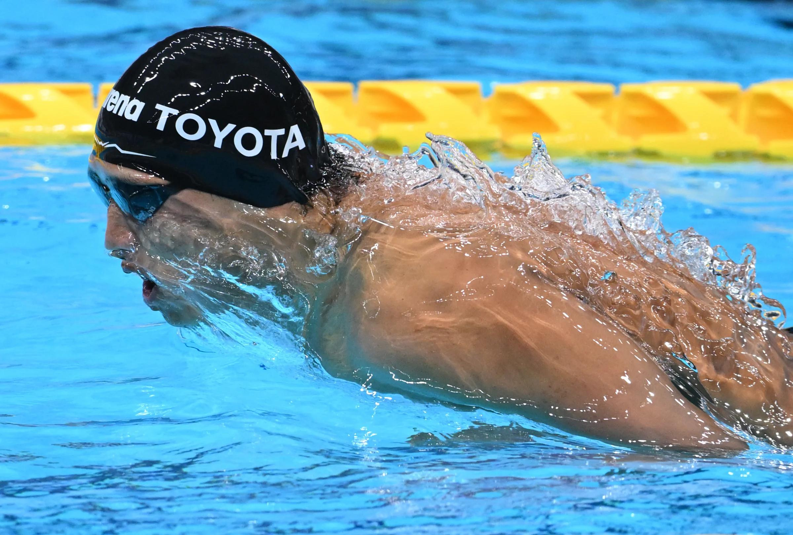
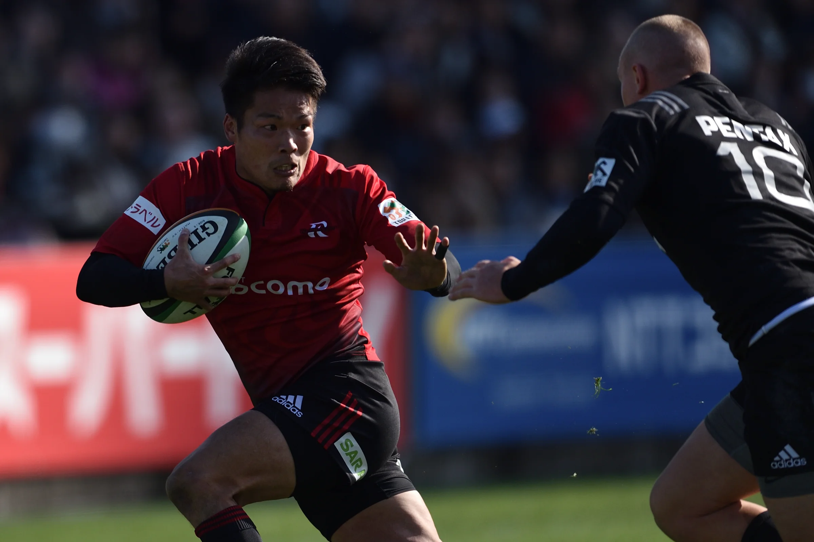

競技の決定的瞬間を、一枚に。



水泳、ラグビー、ボート、トライアスロンをはじめ、さまざまな競技の現場で撮影を続けて10年以上。水しぶき、ぶつかり合う瞬間、ゴール直後の表情——一瞬で過ぎていく競技の決定的な場面を、一枚の写真として残すことを大切にしています。
撮影している競技
JPS展 優秀賞ほか受賞。日本スポーツ写真協会 会員、日本ローイング協会 広報スタッフ。
撮影競技
作品をすべて見るプロフィール
- JCII主催 水谷塾 入塾
- 同塾 卒業
- 2018 – 2021JPS展 入選
- JPS展 優秀賞
- 二科会 写真部 会友
- 現在一般社団法人 日本スポーツ写真協会 会員
- 現在日本ローイング協会 広報委員スタッフ